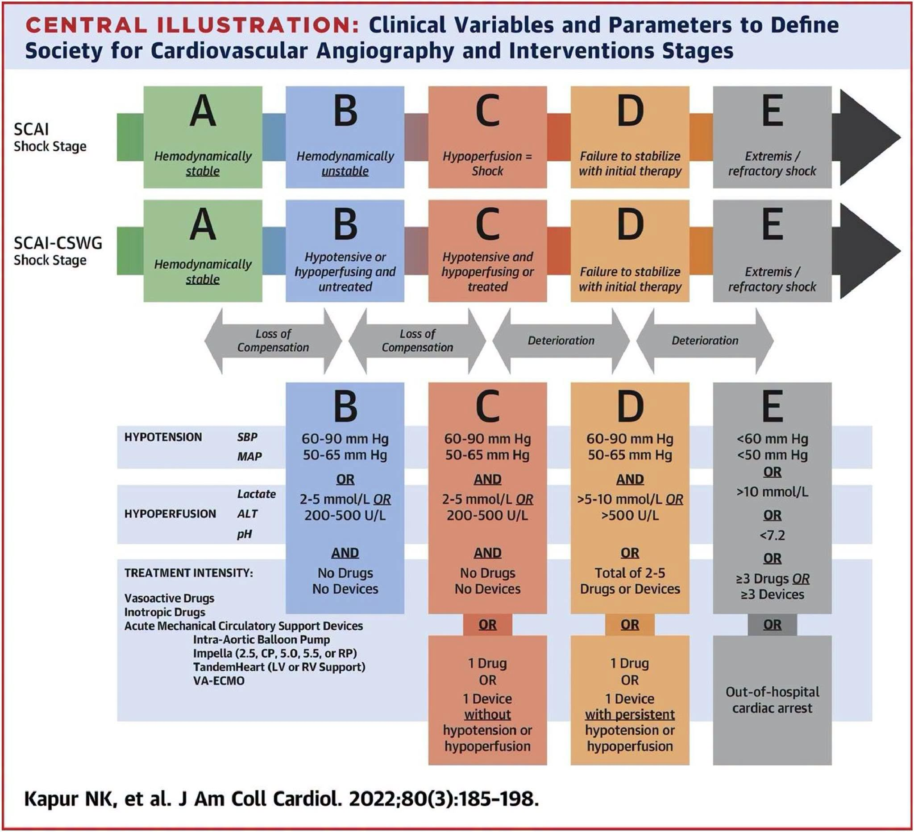
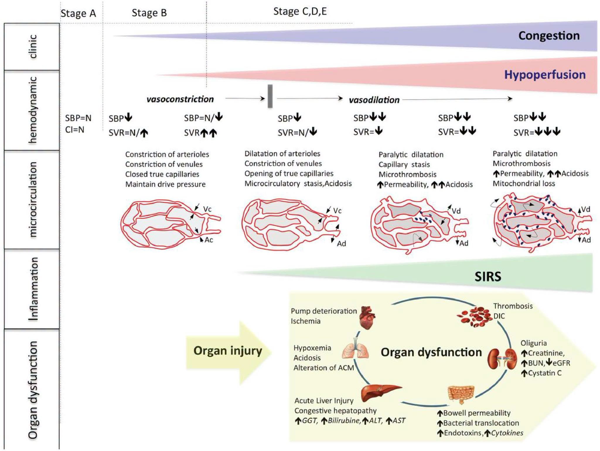

1. Định Nghĩa, Dịch Tễ Học Và Gánh Nặng Lâm Sàng Của Sốc Tim (CS)
Sốc tim (Cardiogenic Shock - CS) vẫn là một trong những nguyên nhân hàng đầu gây tử vong tại bệnh viện. Mỗi năm, ước tính có khoảng 40.000 đến 50.000 bệnh nhân tại Hoa Kỳ và 60.000 đến 70.000 bệnh nhân tại Châu Âu được điều trị vì sốc tim. Mặc dù đã có những tiến bộ lớn trong liệu pháp hỗ trợ tuần hoàn cơ học (Mechanical Circulatory Support - MCS) và dược lý học, kết quả ngắn hạn vẫn rất nghèo nàn với tỷ lệ tử vong trong vòng 30 ngày dao động từ 30% đến 60%.
Nhồi máu cơ tim cấp (AMI) là nguyên nhân phổ biến nhất gây ra sốc tim, chiếm hơn 80% tổng số các trường hợp. Tỷ lệ xuất hiện sốc tim sau nhồi máu cơ tim cấp dao động từ 5% đến 15%. Sự duy trì tỷ lệ tử vong cao trong các đăng ký đương đại phản ánh tình trạng già hóa dân số và sự gia tăng các bệnh lý đi kèm ở bệnh nhân.
• Huyết áp tâm thu (SBP) < 90 mmHg trong ≥ 30 phút (hoặc cần thuốc vận mạch để duy trì SBP ≥ 90 mmHg).
• Chỉ số tim (Cardiac Index - CI) < 2.2 L/min/m².
• Chênh lệch oxy động - tĩnh mạch tăng > 5.5 mL/dL.
• Áp lực bít mao mạch phổi (PCWP) ≥ 15 mmHg.
Bảng 1: Định Nghĩa Sốc Tim Trong Các Thử Nghiệm Lâm Sàng & Hướng Dẫn
| Nghiên cứu / Guideline | Tiêu chuẩn Lâm sàng & Huyết động Chẩn đoán |
|---|---|
| SHOCK Trial | 1. SBP < 90 mmHg trong ≥ 30 phút hoặc cần hỗ trợ để duy trì SBP ≥ 90 mmHg; 2. Giảm tưới máu tạng (nước tiểu < 30 mL/h, chi lạnh, HR > 60 bpm); 3. Tiêu chuẩn huyết động: CI ≤ 2.2 L/min/m² VÀ PCWP ≥ 15 mmHg. |
| TRIUMPH Trial | 1. Thông thoáng mạch máu thủ phạm (IRA) tự phát hoặc post-PCI; 2. Sốc tim kháng trị > 1 giờ post-PCI với SBP < 100 mmHg bất chấp dùng vận mạch (dopamine ≥ 7 µg/kg/min hoặc norepinephrine/epinephrine ≥ 0.15 µg/kg/min); 3. Tăng áp lực đổ đầy thất trái & LVEF < 40%. |
| IABP-SHOCK II | 1. SBP < 90 mmHg trong ≥ 30 phút hoặc cần catecholamine duy trì SBP > 90 mmHg; 2. Sung huyết phổi trên lâm sàng; 3. Suy giảm tưới máu tạng (tri giác, chi lạnh ẩm, nước tiểu < 30 mL/h, Lactate > 2.0 mmol/L). |
| CULPRIT-SHOCK | 1. PCI cấp cứu bệnh vành nhiều nhánh (hẹp > 70% ở ≥ 2 nhánh lớn ≥ 2 mm); 2. SBP < 90 mmHg trong > 30 phút hoặc cần catecholamine; 3. Sung huyết phổi VÀ tưới máu tạng suy giảm (Lactate > 2.0 mmol/L, nước tiểu < 30 mL/h, tri giác). |
| ESC Guidelines | SBP < 90 mmHg kèm thể tích tuần hoàn đầy đủ và các dấu hiệu lâm sàng/xét nghiệm giảm tưới máu mô (chi lạnh, thiểu niệu, toan chuyển hóa, tăng lactate, tăng creatinine). |
2. Sinh Lý Bệnh Học Và Vòng Xoắn Sốc (The "Shock Spiral")
Sinh lý bệnh học của sốc tim phản ánh sự không tương hợp nghiêm trọng giữa cung lượng tim (Cardiac Output - CO) và nhu cầu chuyển hóa của hệ thống. Sự sụt giảm đột ngột thể tích nhát bóp do tổn thương cơ tim kích hoạt phản ứng bù trừ:
- Kích hoạt giao cảm & RAAS: Co mạch hệ thống để duy trì áp lực tưới máu trung ương.
- Hệ quả bất lợi: Co mạch hệ thống làm tăng gánh nặng hậu gánh cho thất trái, trong khi sự giữ muối/nước làm tăng tiền gánh (quá tải thể tích lồng ngực). Công tim tăng cao làm trầm trọng thêm tình trạng thiếu máu cục bộ cơ tim.
• Rối loạn vi tuần hoàn: Co thắt tiểu động mạch/tĩnh mạch tiến triển thành giãn mạch liệt, tăng tính thấm mao mạch, ứ trệ mao mạch và vi huyết khối lan tỏa (MFI & de Backer score tương quan trực tiếp tử vong 30 ngày).
• Phản ứng viêm hệ thống (SIRS): Kích hoạt ở ~40% bệnh nhân vào ngày thứ 2. Tăng vọt các Interleukin (IL-1β, IL-6, IL-7). Nitric oxide (NO) giải phóng cục bộ gây giãn mạch liệt và ức chế co bóp cơ tim.
• Suy hàng rào niêm mạc ruột: Thiếu máu cục bộ ruột gây dịch chuyển vi khuẩn (bacterial translocation) và giải phóng endotoxin vào tuần hoàn.
• Phổi - Gan - Thận - Đông máu: Phù phổi kẽ toan máu; Sung huyết gan & tổn thương gan cấp (tăng ALT, AST, Bilirubin); Suy thận cấp thiếu máu cục bộ (thiểu niệu, tăng Creatinine); Đông máu nội quản rải rác (DIC).

Hình 1: Sơ đồ Sinh lý bệnh học của Sốc tim với các bất thường theo giai đoạn lâm sàng (SCAI A-E), huyết động hệ thống, rối loạn vi tuần hoàn và suy đa cơ quan (Trích từ J Cardiothorac Vasc Anesth 2026).
3. Hệ Thống Phân Độ Sốc SCAI Cải Tiến (SCAI Shock Stages A-E)
Bảng phân loại giai đoạn sốc của Hiệp hội Chụp mạch và Can thiệp Tim mạch (SCAI) chia tiến trình sốc tim thành 5 giai đoạn liên tục từ A đến E. Khung định nghĩa cải tiến của Kapur et al. (Cardiogenic Shock Working Group) cụ thể hóa các tiêu chuẩn thực hành lâm sàng:
| Giai đoạn SCAI | Tên giai đoạn | Tiêu chuẩn Huyết động & Sinh hóa Cụ thể |
|---|---|---|
| Giai đoạn A | At Risk (Có nguy cơ) | Bệnh nhân có bệnh tim cấp tính (AMI, suy tim cấp) nhưng huyết động hoàn toàn ổn định, không có dấu hiệu giảm tưới máu. |
| Giai đoạn B | Preshock (Tiền sốc) | SBP 60-90 mmHg hoặc MAP 50-65 mmHg đơn độc, HOẶC giảm tưới máu cô lập (Lactate 2-5 mmol/L, ALT 200-500 U/L) chưa cần vận mạch/MCS. |
| Giai đoạn C | Classic (Sốc điển hình) | Xuất hiện đồng thời Hạ huyết áp VÀ Giảm tưới máu mô HOẶC đang duy trì 1 thuốc vận mạch/tăng co bóp hoặc 1 thiết bị MCS (IABP, Impella, ECMO). |
| Giai đoạn D | Deteriorating (Diễn tiến xấu) | Thất bại ổn định huyết động sau ≥ 30 phút điều trị ban đầu. Lactate 5-10 mmol/L, ALT > 500 U/L, hoặc cần leo thang 2-5 thuốc/MCS. |
| Giai đoạn E | Extremis (Sốc trơ/Nguy kịch) | Trụy tim mạch hoàn toàn. Ngừng tuần hoàn ngoại viện (OHCA), CPR liên tục, hoặc cần ≥ 3 thuốc/MCS đồng thời. SBP < 60, MAP < 50, Lactate > 10 mmol/L, pH ≤ 7.2. |
4. Dấu Ấn Sinh Học Mới Và Các Thang Điểm Tiên Lượng Lâm Sàng
4.1. Các Dấu Ấn Sinh Học (Biomarkers) Mới Trong Sốc Tim
- Cardiac Troponin (cTn): Chuẩn vàng hoại tử cơ tim, tương quan nguy cơ loạn nhịp thất và ngưng tim.
- BNP & NT-proBNP: Tăng đáp ứng với căng thành tim. NT-proBNP kết hợp với IL-6 có vai trò tiên lượng sống sót rất cao.
- Soluble ST2 (sST2): Chỉ số tiên lượng rất cao. Điểm ưu việt: Nồng độ huyết thanh duy trì ổn định, không bị ảnh hưởng bởi suy thận hay BMI. Tích hợp vào thang điểm CardShock để dự báo tử vong 30 và 90 ngày.
- Dipeptidyl Peptidase 3 (DPP3): Protease tuần hoạt ức chế trực tiếp sức co bóp cơ tim. Nồng độ DPP3 cao liên quan tử vong ngắn hạn cao, giảm eGFR, tăng lactate và creatinine.
- Adrenomedullin (bio-ADM): Hormone giãn mạch tiên lượng tốt sau 48 giờ kể từ khi chẩn đoán sốc.
- Angiopoietin 2: Yếu tố duy trì tính toàn vẹn mạch máu. Tăng ở mốc 72 giờ liên quan AKI và chảy máu.
4.2. Các Thang Điểm Tiên Lượng Lâm Sàng
• CardShock Risk Score: Dự đoán tử vong tại viện (Tuổi, tiền sử MI/CABG, ACS, LVEF < 40%, tri giác, SBP, Lactate, eGFR).
• IABP-SHOCK II Score: Dự đoán tử vong 30 ngày ở AMI-CS (Tuổi > 73, stroke, Đường máu > 191 mg/dL, Creatinine > 1.5 mg/dL, Dòng chảy TIMI < 3 post-PCI, Lactate > 5 mmol/L).
• ENCOURAGE Score: Dự đoán tử vong ở bệnh nhân AMI-CS được chạy VA-ECMO (Tuổi > 60, nữ, BMI > 25, Glasgow < 6, Creatinine > 150 µmol/L, Lactate, Prothrombin < 50%).
• SAVE Score: Dự đoán sống sót sau khi chạy VA-ECMO cho sốc tim trơ.
5. Giám Sát Huyết Động Xâm Lấn Bằng Catheter Động Mạch Phổi (PAC)
Giám sát bằng Catheter động mạch phổi (PAC) cung cấp các thông tin khách quan vô giá về tình trạng thể tích, áp lực đổ đầy hai thất, sức cản mạch phổi và chức năng thất phải. Phân tích gộp chỉ ra đặt PAC giúp giảm tử vong 30 ngày (OR 0.71) và tăng cơ hội tiếp cận kịp thời với các liệu pháp MCS nâng cao.
• Tỷ lệ RA/PCWP: Đánh giá suy thất phải (Tỷ lệ > 0.59 gợi ý suy thất phải rõ rệt).
• Công suất tim (Cardiac Power Output - CPO): \(\text{CPO} = \frac{\text{MAP} \times \text{CO}}{451}\). CPO < 0.6 W sau 24 giờ liên quan tử vong 30 ngày rất cao.
• Chỉ số mạch đập động mạch phổi (PAPi): \(\text{PAPi} = \frac{\text{PASP} - \text{PADP}}{\text{RAP}}\). PAPi < 1.85 gợi ý suy thất phải.
Phân Loại Hồ Sơ Huyết Động Trong Sốc (Hemodynamic Profiles)
| Hồ sơ Huyết động | Áp lực Tim Phải (CVP/RA) | Áp lực Tim Trái (PCWP) | Đặc điểm Lâm sàng |
|---|---|---|---|
| Hypovolemic (Giảm thể tích) | Thấp (< 6 mmHg) | Thấp (< 10 mmHg) | Thiếu dịch tuần hoàn tuyệt đối hoặc tương đối. |
| RV Congestion (Sung huyết Thất phải) | Tăng cao (> 12 mmHg) | Bình thường / Thấp | Suy thất phải đơn thuần (TAPSE thấp, PAPi < 1.85). |
| LV Congestion (Sung huyết Thất trái) | Bình thường | Tăng cao (> 15 mmHg) | Suy thất trái đơn thuần, phù phổi cấp huyết động. |
| BiV Congestion (Sung huyết Hai thất) | Tăng cao (> 12 mmHg) | Tăng cao (> 15 mmHg) | Suy hai thất toàn bộ, nguy cơ tử vong cực kỳ cao. |

Hình 2: Các hồ sơ huyết động trong Sốc tim dựa trên sự tương quan giữa Áp lực đổ đầy tim phải (CVP/RA) và Áp lực đổ đầy tim trái (PCWP) (Trích từ J Cardiothorac Vasc Anesth 2026).
6. Hỗ Trợ Tuần Hoàn Cơ Học (MCS) Và Bằng Chứng Hiệu Quả
Thuốc vận mạch/tăng co bóp làm tăng tiêu thụ oxy cơ tim (\(MVO_2\)) và nguy cơ loạn nhịp. Do đó, các thiết bị hỗ trợ tuần hoàn cơ học (MCS) tạm thời nổi lên như một liệu pháp bắc cầu chính yếu.
Bảng 2: Tác Động Huyết Động Của Các Thiết Bị MCS Khác Nhau
| Thông số huyết động | Impella 2.5 / CP | Impella 5.0 / 5.5 | VA-ECMO | IABP |
|---|---|---|---|---|
| Dòng chảy thất trái (LV flow) | Giảm (↓) | Giảm nhiều (↓↓) | Tăng (↑) | Giảm (↓) |
| Cung lượng tim (CO) | Tăng (↑) | Tăng mạnh (↑↑) | Tăng rất mạnh (↑↑↑) | Tăng nhẹ (↑) |
| Huyết áp trung bình (MAP) | Tăng (↑) | Tăng mạnh (↑↑) | Tăng mạnh (↑↑) | Tăng nhẹ (↑) |
| Áp lực bít mao mạch phổi (PCWP) | Giảm nhiều (↓↓) | Giảm nhiều (↓↓) | Tăng (↑) hoặc Giảm (↓) | Giảm (↓) |
| Hậu gánh thất trái (LV afterload) | Giảm (↓) | Giảm (↓) | Tăng mạnh (↑↑) | Giảm (↓) |
| Tiêu thụ oxy cơ tim (\(MVO_2\)) | Giảm nhiều (↓↓) | Giảm nhiều (↓↓) | Tăng (↑) hoặc Giữ nguyên | Giảm (↓) |
| Tưới máu mạch vành | Tăng (↑) | Tăng (↑) | Tăng (↑) | Tăng mạnh (↑↑) |
7. Giải Áp Thất Trái (LV Unloading) Khi Chạy VA-ECMO
Mặc dù VA-ECMO cung cấp hỗ trợ tuần hoàn toàn diện, dòng chảy ngược từ đường trả máu động mạch đùi làm tăng đáng kể hậu gánh thất trái. Khi thất trái suy nặng không thể mở van động mạch chủ, áp lực LVEDP và PCWP tăng vọt, gây phù phổi cấp huyết động, huyết khối buồng tim và tăng tiêu thụ oxy cơ tim.
Bảng 3: So Sánh Các Biện Pháp Giải Áp Thất Trái (LV Unloading Modalities)
| Phương thức giải áp | Ưu điểm & Cơ chế | Nhược điểm & Hạn chế |
|---|---|---|
| Thuốc tăng co bóp (Inotropes) | Đơn giản, chi phí thấp, không cần can thiệp dụng cụ bổ sung. | Tăng tiêu thụ oxy cơ tim, nguy cơ loạn nhịp thất, hiệu quả giải áp hạn chế. |
| Bóng đối xung động mạch chủ (IABP) | Dễ thực hiện tại giường, tỷ lệ biến chứng thấp, tăng tưới máu vành. | Chỉ giải áp một phần; chống chỉ định khi hở van ĐMC hoặc phình ĐMC. |
| Thiết bị Impella (ECMELLA) | Giải áp chủ động & trực tiếp, giảm LVEDP tối ưu, tăng dòng chảy hệ thống. | Tán huyết, chảy máu, thiếu máu chi; chi phí cao; chống chỉ định khi hở van ĐMC. |
| Chọc vách liên nhĩ (Atrial Septostomy) | Giải áp nhĩ trái/thất trái trực tiếp qua luồng thông sang nhĩ phải. | Nguy cơ tổn thương vách tim, di lệch stent, cần can thiệp đóng lại sau hồi phục. |
| Cannula giải áp ngoại khoa / qua da | Dẫn lưu máu trực tiếp từ thất trái/nhĩ trái, hiệu quả giải áp tối đa. | Biến chứng kỹ thuật mổ ngực hoặc chọc đường vào xâm lấn. |
8. Quy Trình Leo Thang (Escalation) Và Hạ Bậc (De-escalation) MCS
[ SỐC TIM CÓ HỖ TRỢ MCS ] │ ┌───────────────────┴───────────────────┐ Huyết động/Chuyển hóa ổn định? Huyết động suy sụp nặng hơn? Lactate giảm? Giảm liều vận mạch? Inotropic score >20? Cần vận mạch >48h? │ │ ▼ ▼ [ HẠ BẬC / DE-ESCALATION ] [ LEO THANG / ESCALATION ] │ │ ▼ ┌─────┴─────────────────────┐ - Cai dần VA-ECMO ▼ ▼ - Chuyển sang Impella 5.0 (đường nách) [ SUY ĐƠN THẤT TRÁI ] [ SUY HAI THẤT / BIVENTRICULAR ] để vận động sớm - Đổi từ đường đùi - Đặt VA-ECMO - Rút dần dụng cụ hỗ trợ lên đường nách - Hoặc thêm dụng cụ ProtekDuo - Tăng dòng Impella 5.0 - Hoặc phối hợp BIPELLA (Impella LV+RV)
- Tiêu chuẩn Leo thang (Escalation): Đặt ra khi Inotropic score > 20, lactate máu tăng dai dẳng, hoặc suy đa tạng tiến triển. Suy đơn thất trái -> đổi sang Impella 5.0/5.5 đường nách; Suy hai thất (RAP > 16, PAPi < 1.85, RA/PCWP > 0.59) -> chỉ định VA-ECMO, ProtekDuo hoặc BIPELLA.
- Tiêu chuẩn Hạ bậc (De-escalation): Khi nồng độ lactate bình thường hóa và huyết động ổn định. Chuyển đổi từ VA-ECMO sang Impella 5.0 nách (thời gian trung bình 22 giờ post-admission) giúp bệnh nhân rút ống sớm và tập vận động tại ICU.
9. Can Thiệp Bệnh Tim Cấu Trúc & Mô Hình Tổ Chức Chăm Sóc Sốc Tim
- Sửa van hai lá qua catheter (TMVR / MitraClip): Hở van 2 lá nặng gặp ở 5-10% bệnh nhân sốc tim. Can thiệp TMVR thành công giúp giảm tỷ lệ tử vong 1 năm từ 69.2% xuống 39.7% (Jung et al.).
- Thay van động mạch chủ qua catheter (TAVI): TAVI cấp cứu đóng vai trò như liệu pháp cứu mạng ở sốc tim do Hẹp van ĐMC khít (Tỷ lệ thành công kỹ thuật đạt 94.1%).
- Mô hình Shock Team & Mạng lưới Spoke-Hub: Thành lập đội sốc đa chuyên khoa (Tim mạch can thiệp, Phẫu thuật tim, Hồi sức cấp cứu, Chuyên gia Suy tim) và kết nối Bệnh viện vệ tinh (Spoke) với Trung tâm tuyến cuối (Hub) giúp nhận diện và can thiệp MCS sớm trước khi suy tạng không hồi phục.